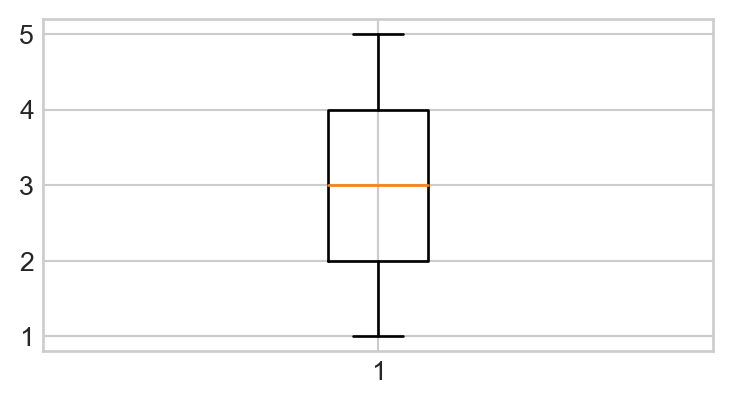
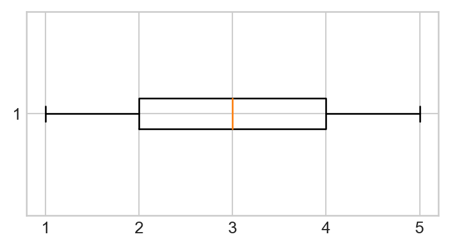
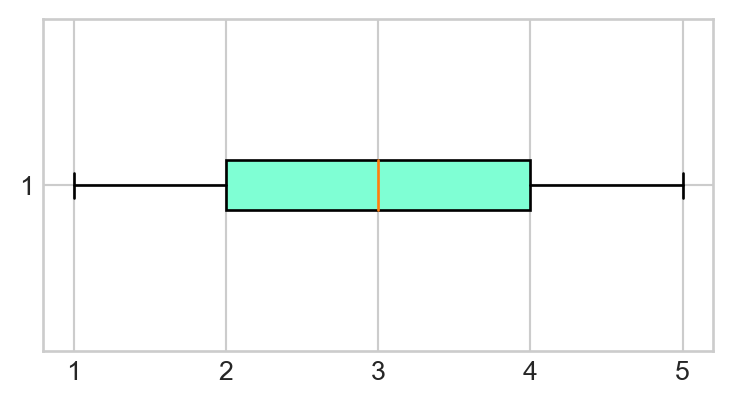
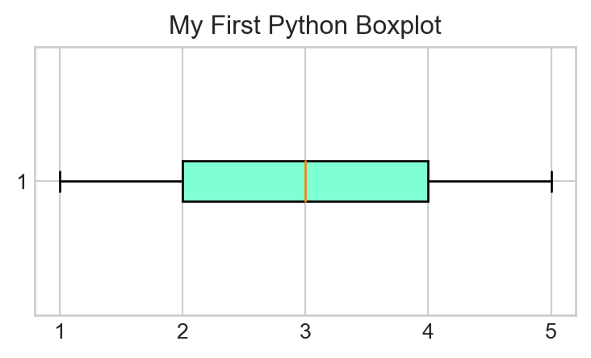
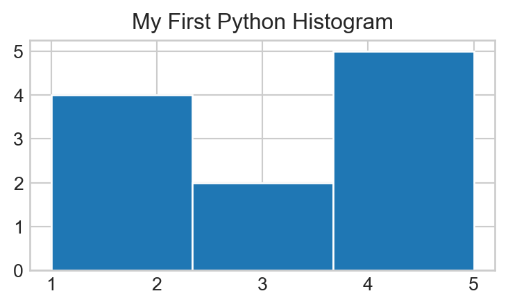
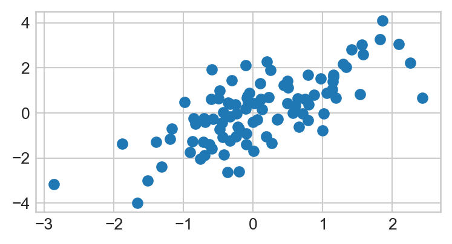
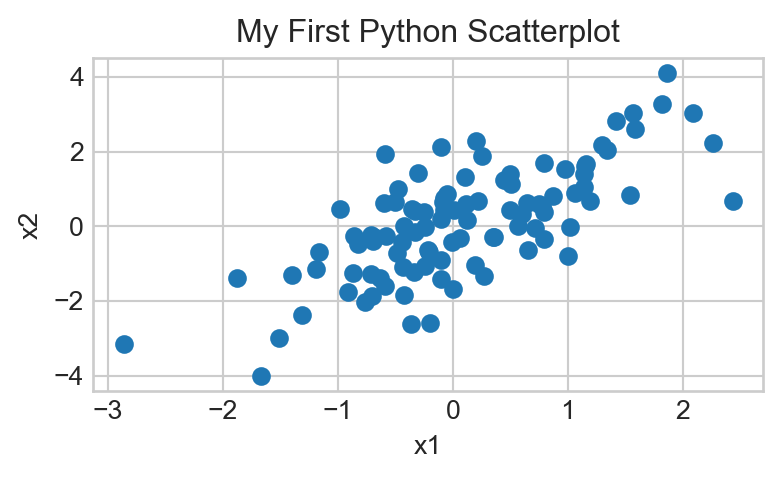
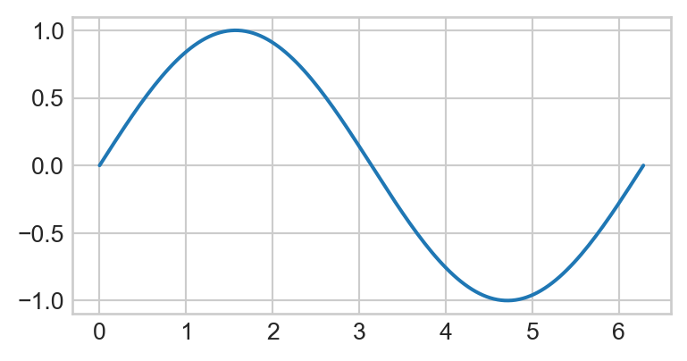
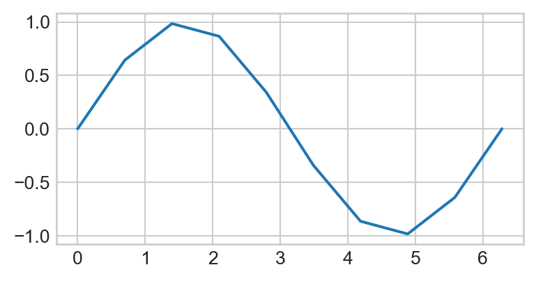
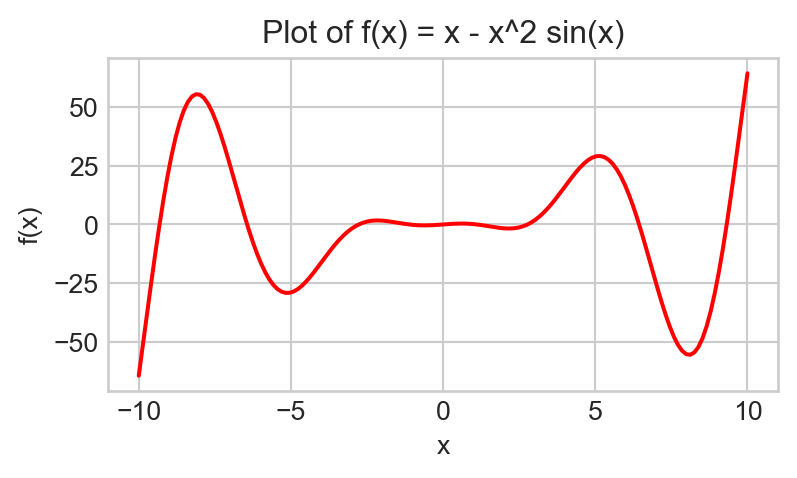

from <module name> import *It’s finally time for us to revisit our notions of descriptive statistics (from Week 1 of the course), now in the context of Python!
Modules, Revisited
Before we talk about plotting, we will need to quickly talk about modules again. Recall from Lab01 that modules are Python files containing definitions for functions and classes. Up until now, we’ve been importing all functions and classes from a module using the command
There is another way to import modules, which is the following:
import <module name> as <abbreviation>For example,
import numpy npnot only imports the numpy module but imports it with the abbreviation (i.e. nickname) np so that we can simply write np in place of numpy.
The reason this is particularly useful is because module names can sometimes be quite long, so being able to refer to the module with a shortened nickname will save a lot of time!
In general, if we import a module using
import <module name> as <abbreviation>we reference functions from <module name> using the syntax
<abbreviation>.<function name>()For example, after having imported the numpy module with the nickname np, we access the sin() function contained in the numpy module by calling
np.sin()
Task 1
Import the
numpymodule asnp, and check thatnp.sin(0)returns a value of0.Import the
datasciencemodule asds, and check that
ds.Table().with_columns(
"Col1", [1, 2, 3],
"Col2", [2, 3, 4]
)correctly displays as
| Col1 | Col2 |
|---|---|
| 1 | 2 |
| 2 | 3 |
| 3 | 4 |
Important
If you import a module with an abbreviation <abbreviation>, you must always use the abbreviation when referencing the module; not the original module name.
For example, after importing numpy as np, running numpy.sin() would return an error.
Numerical Summaries
Measures of Central Tendency
Recall that for a list of numbers \(X = \{x_i\}_{i=1}^{n}\), the mean is defined to be \[ \overline{x} = \frac{1}{n} \sum_{i=1}^{n} x_i = \frac{1}{n} (x_1 + \cdots + x_n) \] Computing the mean of a list or array of numbers in Python is relatively simple, using the np.mean() function [recall that we imported the numpy module with the abbreviation np, meaning np.mean() is a shorthand for numpy.mean()]. Similarly, to compute the median of a list or array we can use np.median().
Task 2
Let x_list be a list containing the elements 1, 2, and 3, and let x_array be an array containing the elements 1, 2, and 3. Compute the mean and median of x_list and x_array using the appropriate functions from the numpy module.
Measures of Spread
Recall that we also discussed several measures of spread:
- Standard deviation
- IQR (Interquartile Range)
- Range
Sure enough, the numpy module contains several functions which help us compute these measures. Let’s examine each separately.
Task 3
- Look up the help file on the function
np.ptp(), and describe what it does. Also, answer the question: what doesptpactually stand for? - Now, apply the
np.ptp()function on yourx_listandx_arrayvariables from Task 1 above and check that it functions like you expect.
Next, we tackle a slightly peculiar function: np.std(). We expect this to compute the standard deviation of a list/array, but…
Task 4
- Compute the standard deviation of the
x_listvariable from Task 1 by hand, and write down the answer using a comment or Markdown cell. - Now, run
np.std(x_list). Does this answer agree with what you found in part (a) above? - Now, recompute the standard deviation of
x_listby hand but this time use \((1/n)\) instead of \((1 / n - 1)\) in the formula. How does this answer compare with the result ofnp.std(x_list)?
The result of the previous Task is the following: given a list x = [x1, x2, ..., xn], running np.std(x) actually computes \[ \sqrt{ \frac{1}{n} \sum_{i=1}^{n} (x_i - \overline{x})^2 } \] as opposed to our usual definition of standard deviation \[ s_X = \sqrt{ \frac{1}{n - 1} \sum_{i=1}^{n} (x_i - \overline{x})^2} \] We can actually fix this issue by passing in an additional argument to the np.std() function:
Task 4 (cont’d)
- Run
np.std(x_list, ddof = 1)and check whether this matches the result of part (a) above.
Result
To compute the standard deviation of a list x, we run np.std(x, ddof = 1).
Finally, we turn to the IQR: to compute the IQR of a list/array x, we use (after importing numpy as np)
np.diff(np.percentile(x, [25,75]))[0]Visualizations
It’s finally time to make pretty pictures! The module we will use to generate visualizations in this class is the matplotlib module (though there are quite a few other modules that work for visualizations as well). The official website for matplotlib can be found at https://matplotlib.org/.
Before we generate any plots, we will need to run the following code once:
%matplotlib inline
import matplotlib
import matplotlib.pyplot as plt
plt.style.use('seaborn-v0_8-whitegrid')Here’s what these lines of code are doing:
%matplotlib inlinetells Jupyter to actually display our plots in our notebook (if we didn’t include this line, our plots wouldn’t display)import matplotlibimports thematplotlibmoduleimport matplotlib.pyplot as pltimports thepyplotsubmodule (a submodule is just a module contained within another larger module) with the abbreviationplt.plt.style.use('seaborn-v0_8-whitegrid')tells Jupyter to use a specific theme (calledseaborn-v0_8-whitegrid) when generating plots.
Again, notice the beauty of the import <module> as <abbreviation> syntax- after running the third line above, we no longer need to write matplotlib.pyplot, just plt! Also, there are lots of other themes you can use when generating your plots: after completing this lab, I encourage you to consult this reference guide for a list of a few other pyplot themes.
Boxplots and Histograms
Now, let’s proceed on to make some plots. The first two types of plots we will look at are the two we used to describe numerical data: namely, boxplots and histograms. The functions we will use are the plt.boxplot() and plt.his() functions, respectively.
Task 5
Make a list called
ythat contains the following elements:[1, 2, 3, 4, 5, 4, 3, 5, 4, 1, 2].Run
plt.boxplot(y);(be sure to include the semicolon!). With any luck, your plot should look like:

- Let’s make our boxplot horizontal, as opposed to vertical. Consult the help file on the
matplotlib.pyplot.boxplot()function here and figure out how to position your boxplot horizontally. Your new plot should look like:

- Next, let’s add some color to our plot. Within your call to
plt.boxplot(), add the following:patch_artist=True, boxprops = dict(facecolor = "aquamarine")(don’t worry too much about what exactly this code is doing). Your boxplot should now look like this:

- Finally, let’s add a Title! Right below your call to
plt.boxplot(), add the following:plt.title("My First Python Boxplot");(again, note the semicolons). Your final plot should look like this:

- Time for a review: based on the boxplot we just generated, what is the IQR of
y? Write your answer in a Markdown cell. Then, use the syntax discussed in the previous section of this Lab to use Python to compute the IQR ofy, and comment on the result.
Of course, boxplots are not the only way to summarize numerical variables: we also have histograms!
Task 6
Call the plt.hist() function on the y list defined in Task 3, and use the help file to add arguments to your call to plt.hist() function to generate the following plot:

Pay attention to the number of bins!
Scatterplots
We should also quickly discuss how to generate scatterplots in Python.
Task 7
- Copy-paste the following code into a code cell, and then run that cell (don’t worry about what this code is doing- we’ll discuss that in a future lab).
np.random.seed(5)
x1 = np.random.normal(0, 1, 100)
x2 = x1 + np.random.normal(0, 1, 100)
plt.scatter(x1, x2);Your plot should look like this:

- Add an x-axis label that says
"x1"and a y-axis label that says"x2". Your final plot should look like:

- Does there appear to be an association between the variables
x1andx2? If so, is the association positive or negative? Linear or nonlinear? Answer using a comment or a Markdown Cell.
Plotting a Function
Finally, I’d like to take a quick detour from descriptive statistics and talk about how to plot a function using Python. As a concrete example, let’s try and plot a sine curve from \(0\) to \(2\pi\).
If you recall, on Lab01 we used the sin() function from the math module- it turns out that the numpy module (which, recall, we have imported as np) also has a sin() function, so let’s use that one today:
np.sin()Next, we create a set of finely-spaced points between our two desired endpoints (in this case, \(0\) and \(2\pi\), respectively). We will do so using the np.linspace() function, which works as follows:
np.linspace(start, stop, num)creates a set of num evenly-spaced values between start and stop, respectively. For instance:
np.linspace(0, 1, 10)array([ 0. , 0.11111111, 0.22222222, 0.33333333, 0.44444444,
0.55555556, 0.66666667, 0.77777778, 0.88888889, 1. ])In the context of plotting, the more points we generate the smoother our plot will seem (you will see what this means in a minute). As such, let’s start with 150 points between 0 and 2 * pi:
x = np.linspace(0, 2 * np.pi, 150)Finally, we call the plt.plot() function on x and np.sin(x) to generate our plot:
plt.figure(figsize=(4.5, 2.25))
plt.plot(x, np.sin(x))
Let’s see what would have happened if we used fewer values in our np.linspace() call:
xnew = np.linspace(0, 2 * np.pi, 10)
plt.plot(xnew, np.sin(xnew))
So, the more points we include in our call to np.linspace(), the smoother our final function will look!
So, to summarize, here is the general “recipe” to plot a function f() between two values a and b in Python:
- Let
x = np.linspace(a, b, <some large value>) - Call
plt.plot(x, f(x)) - Add labels/titles as necessary
Task 8
Generate a plot of the function \(f(x) = x - x^2 \sin(x)\) between \(x = -10\) and \(x = 10\). Experiment around with the number of values generated by np.linspace() to ensure your plot is relatively smooth. Be sure to include axis labels; also, change the color of the graph to red. Your final plot should look something like this:

Note on Submission
Please note- from here on out, we will expect you to modify your notebook metadata to include your name and NetID (not your Perm Number!). For a refresher on how to do that, please consult Lab01.